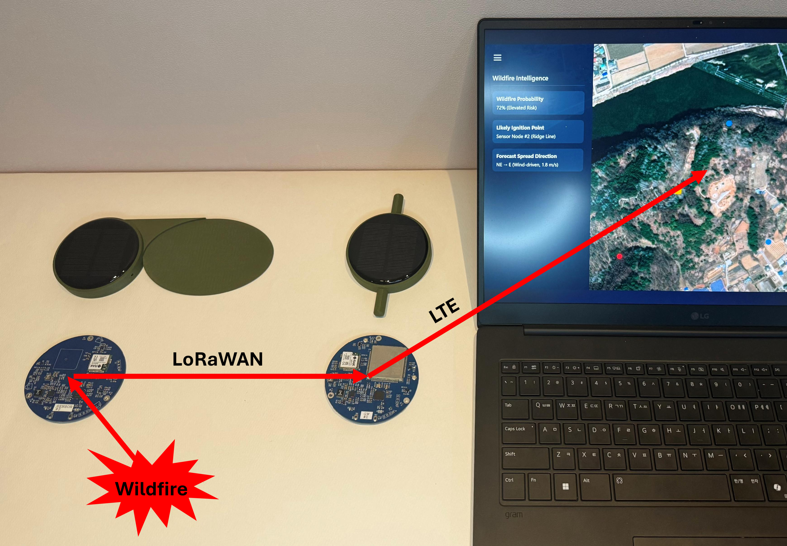
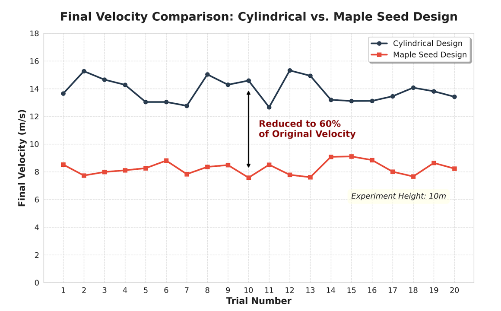
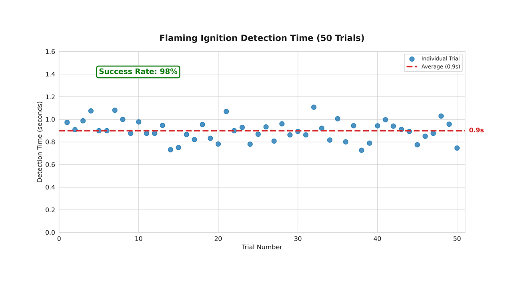
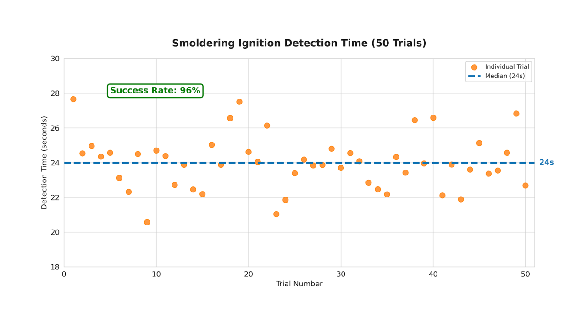
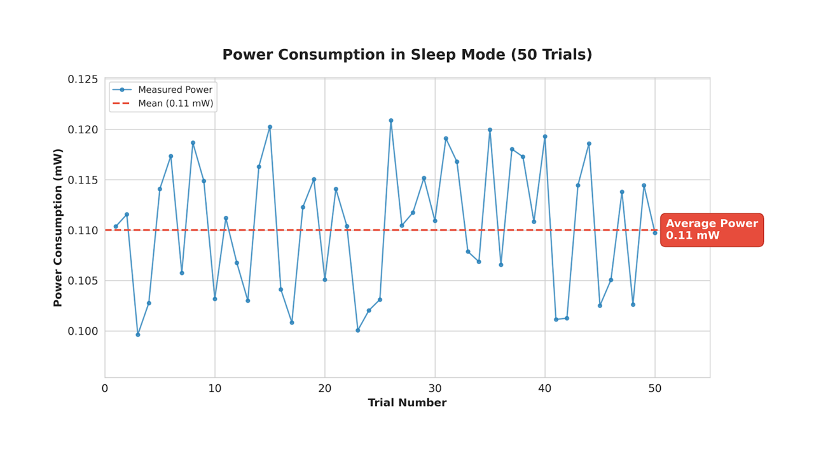

End-to-End System
PALANG is an end-to-end wildfire ignition intelligence system: drone-deployed sensor nodes detect ignition at ground level, transmit priority alerts via LoRaWAN to gateways, and deliver authenticated events to a cloud dashboard with live mapping and forecasting layers.
- Sensor node: IR/optical sensing + BME688 (gas/VOC) + GPS + solar harvesting + supercapacitor + LoRaWAN
- Gateway: receives LoRa packets and relays to cloud
- Cloud platform: live map, node status, risk layers, ignition estimation & forecasting

Deployment: Autorotation
PALANG uses a maple-seed-inspired autorotational enclosure for aerial deployment. Autorotation reduces descent speed (≈60% vs. non-rotating control), improves landing stability, and protects electronics—enabling rapid deployment in remote or hazardous terrain without manual installation.
- Terminal velocity reduction: ~60%
- Landing drift (30 drops): median 0.28 m, max 0.47 m

Dual-Path Ignition Detection
Ignition is not one event. PALANG treats ignition as two physical regimes—flaming and smoldering—and uses a dual-path architecture to detect each regime with the right physics.
Turbulent flames produce optical oscillations concentrated in the 8–30 Hz band. PALANG samples optical signals at 1 kHz, applies an 8–30 Hz band-pass, and uses spectral persistence logic to trigger an event only when flicker energy persists.

Smoldering Detection
Smoldering has weak flicker. Instead, smoke scattering causes gradual optical intensity shifts. PALANG detects sustained slopes (low-pass + temporal slope logic) and cross-validates with correlated VOC/gas signals from BME688 to suppress false triggers from ambient lighting or weather drift.

Communication Pipeline
Nodes transmit event packets through LoRaWAN to gateways, which forward alerts to the cloud. The cloud dashboard visualizes sensor status, locations, and risk layers end-to-end.

Power Autonomy
PALANG is designed for unattended, long-term field operation. Under the deployed duty cycle, the node stays in deep sleep at 0.11 mW, wakes for scheduled telemetry, and immediately wakes for ignition events. Solar harvesting with supercapacitor storage enables continuous operation without battery replacement.

Validation Summary
- Flaming: 0.9 s median, 98% success (50 trials), 0.05 m² at 10 m
- Smoldering: 24 s median, 96% success (50 trials), optical + VOC/gas confirmation
- False alarms: 1.46% over 8 hours daytime monitoring
- Comms: 100% packet delivery at 500 m LOS, 6.8 s alert-to-map latency
- Power: 0.11 mW sleep, solar-powered continuous operation
- Deployability: ~60% slower descent, stable landing drift